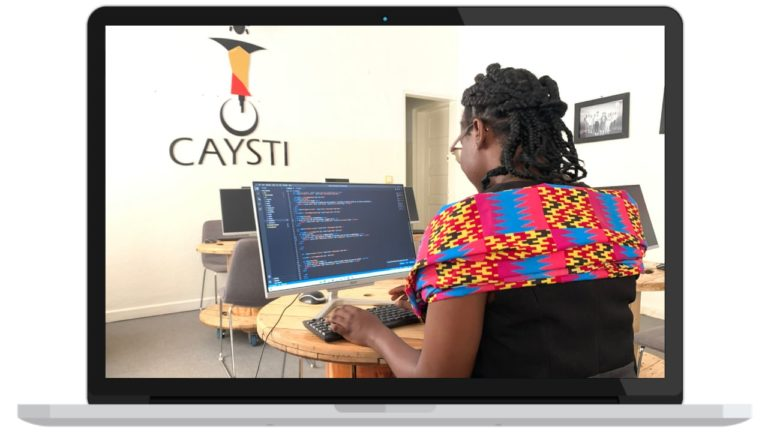

<link rel="stylesheet" href="../assets/css/style.css">
<nav id="nav">
    
    <ul>
        <li> <a href="../index.html">ACCEUIL</a></li>
            <li> <a href="A propos.html">A PROPOS</a></li>
            <li> <a href="Parcours.html">PARCOURS</a></li>
            <li> <a href="Portofolio.html">PORFOLIO</a></li>
            <li> <a href="contact.html">CONTACT</a></li>
    </ul>
</nav>
<section id="parcours">
    <h1>PARCOURS</h1>
    <hr width="100px">
    <div class="génér" >
    <div class="vue">
        
            <h2>Data Science</h2>
            Techwomen Factory est un projet initié par caysti sous la direction d'Arielle KITIO TSAMO.
          ce programme vise en la formation des femmes dans le Tech en général,et en particulier dans 
            les domaines innovants tel que:
        </div>
        

   <div class="vue">
        
        <h2>Developpement web</h2>
        Techwomen Factory est un projet initié par caysti sous la direction d'Arielle KITIO TSAMO.
    ce programme vise en la formation des femmes dans le Tech en général,et en particulier dans 
        les domaines innovants tel que:
    </div>


   <div class="vue">
        
       <h2> Art Numérique</h2>
        Techwomen Factory est un projet initié par caysti sous la direction d'Arielle KITIO TSAMO.
        ce programme vise en la formation des femmes dans le Tech en général,et en particulier dans 
          les domaines innovants tel que:
        </div>
    </div>
</section>